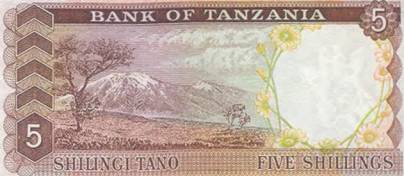
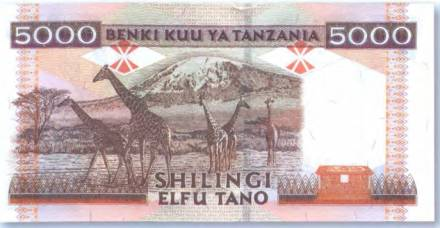
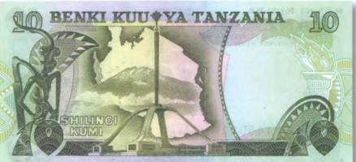
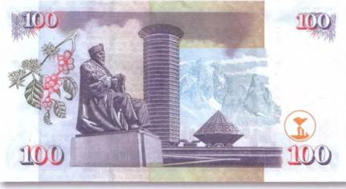
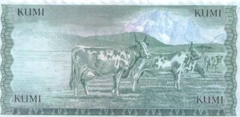

Тайны бумажных денег : Каменные великаны Черного континента

Высочайшей вершиной Африки (5899 м) и самой высокой в мире отдельно стоящей горой является Килиманджаро. Ее так и называют «Крышей Африки». «Широкая, как весь мир, огромная, высокая и неправдоподобно белая», — так описывал ее Эрнест Хемингуэй в своей знаменитой книге «Снега Килиманджаро». Согласно легенде, первым человеком, взошедшим на Килиманджаро, был царь Менелик I — сын царя Соломона и царицы Шебы. Он будто бы и похоронен в кратере бездействующего ныне вулкана. Килиманджаро расположена на севере Танзании, на границе с Кенией. И конечно же, ее изображение можно встретить на деньгах государства. Вид на высочайшую вершину африканского континента запечатлен на оборотной стороне танзанийской банкноты в 5 шиллингов 1966 г. (рис. 120).

На языке суахили Килиманджаро означает «сверкающая гора» — довольно подходящее название для колоссального вулкана, покрытого белоснежной шапкой. У ее основания столбик термометра днем редко опускается ниже +40 °C, в то время как на вершине царят температуры до —20 °C. В 1973 г. правительство Танзании объявило Килиманджаро национальным парком с территорией в 756 км . Из крупных животных там водятся слоны, львы, буйволы, леопарды, обезьяны. А кроме того, огромное количество птиц и пресмыкающихся. Даже на вершине горы, благодаря теплу, исходящему от кратера, растут некоторые растения. И это несмотря на то, что на Килиманджаро лежат вечные снега. Что, кстати сказать, довольно удивительно. Поскольку гора располагается всего на 3° южнее экватора. Однако данные новейших исследований свидетельствуют о том, что ледники Килиманджаро стремительно тают. А вызвано их отступление глобальным потеплением климата планеты. Еще одно замечательное изображение знаменитой горы украсило оборотную сторону танзанийской боны в 5000 шиллингов 1997 г. (рис. 121).

Первое документированное восхождение на высочайшую гору Африки было осуществлено немецким альпинистом Гансом Майером в 1889 г. С тех пор сотни туристов из года в год покоряют вершину Килиманджаро. Но не приходится сомневаться, что и среди местных жителей во все времена находилось немало смельчаков, отправлявшихся в полное опасностей путешествие к вершине.
Для африканских племен, живущих у подножия каменного великана, сверкающая в лучах солнца верхушка долгое время была окутана тайной. Никогда не видевшие снега, они полагали, что она утопает под слоем серебра. Отсюда и возникали сказания о несметных сокровищах Килиманджаро. Однако проверить их никто не осмеливался. Люди боялись злых духов, которые, по логике вещей, должны были охранять великие богатства. По одной легенде, кто-то из вождей не смог сдержать своей жадности и отправил за сверкающим серебром своих лучших воинов. Сгибаясь под тяжестью драгоценной ноши, отважные восходители поспешили вниз. Но их радость была недолгой. Прямо у них на глазах серебро внезапно превратилось в простую воду. Так отомстили коварные духи горы нарушителям их покоя. Жадный до сокровищ вождь остался ни с чем. Лишь холодное царство льда нашли его воины на Килиманджаро. Отсюда и второе название огромного вулкана — Обитель бога холода. Силуэт величественной горы, окутанной клубящимися облаками, можно наблюдать и на купюре Танзании в 10 шиллингов 1978 г. (рис. 122).

Среди денежных знаков соседнего с Танзанией государства — Кении — едва ли найдутся банкноты, на которых не были бы запечатлены горные пики. Это гордость кенийцев — гора Кения. Она была открыта европейцами в 1849 г., а впервые покорена в 1899 г. По имени горы назван и окружающий ее национальный парк, флора и фауна которого богаты и разнообразны. Здесь тоже можно увидеть слонов и носорогов, буйволов и многочисленные виды антилоп. Тут же обитает и царь зверей лев, а также его меньший брат — леопард. В предгорьях раскинулся густой кедровый лес. А на склонах горы можно встретить заросли гигантского бамбука, достигающего в высоту 15 м. Гора Кения изображена на заднем фоне государственного денежного знака в 100 шиллингов 2005 г. (рис. 123).

Гора Кения — вторая по величине вершина Африки. Она расположена в 145 км к северо-западу от столицы Кении Найроби. Ее высота равна 5199 м над уровнем моря. Кения — двуглавая гора. Одна ее вершина представляет собой двойной пик, взмывший в небеса острой 300-метровой скалой. Высочайший из этих пиков, высотой в 5199 м, назван Батиан в честь великого вождя племени Масаи. Второй пик (5188 м) носит имя Нелион — в честь его брата. По северному склону горы на высоте 3,5 км проходит экватор. А в километре от него лежит вторая вершина — пик Ленана (4985 м). По легенде, создатель Вселенной Нгаи жил на вершине Кириниага, что означает «Жилище света». Искаженное произношение названия этой вершины на языке калиба и дало ей современное название. Как, впрочем, и название для всей страны. А еще местные жители именуют этот массив Светящейся горой и до сих пор уверены, что на его вершине обитают их боги. Взглянуть на Кению под иным ракурсом можно на денежном билете государства в 10 шиллингов 1978 г. (рис. 124).

Испокон веков вокруг горы жило племя кикуи. По древней легенде бог Нгаи поселил у подножия Кении прародителей всех людей племени Кикуи-Гикуи и Мумби. Здесь же, как утверждает легенда, Мумби произвела на свет девятерых дочерей. От них позже произошли девять кланов племени. На горе насчитывается 11 ледников. Из них берут начало множество рек, в том числе и самая большая река Кении — Тана.